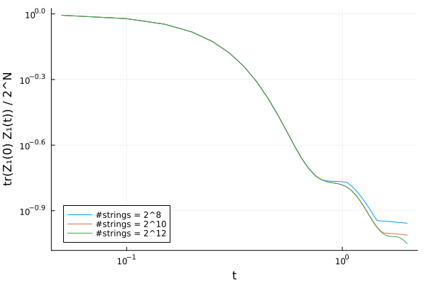
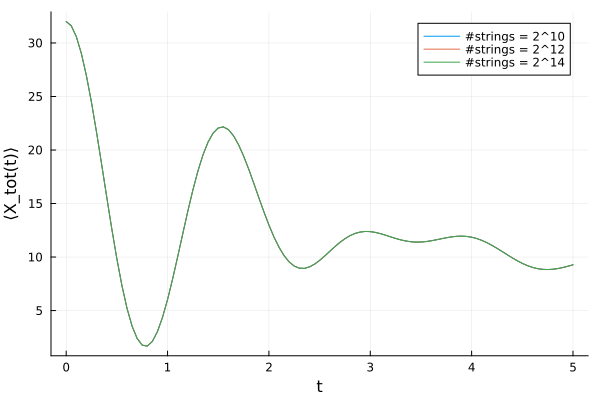

Time evolution
Time evolution with PauliStrings.jl is done in the Heisenberg picture. The method is commonly referred to as sparse Pauli dynamics, Pauli paths simulation, Pauli propagation or Pauli backpropagation.
The advantage of working with Pauli strings is that noisy systems can be efficiently simulated in this representation (Schuster 2024). Depolarizing noise makes long strings decay, so we can make the simulations tractable by combining noise with truncation.
The main entry point is evolve, which integrates Von Neumann's equation $i \frac{dO}{dt} = -[H, O]$ in the Heisenberg picture and returns an EvolutionResult. At each save step, evolve performs three operations:
- one internal step of the chosen integrator (
RK4,DOPRI5,Trotter, orExact) - an optional
dissipationstep (typically depolarizing noise viaadd_noise) - an optional
truncationstep (typicallytrim)
The observable to record is passed through fout, which is called on O at every save time and whose return value is collected into EvolutionResult.history.
Chaotic spin chain
Let's time evolve the operator $Z_1$ in the chaotic spin chain
\[H = \sum_i X_i X_{i+1} - 1.05 \, Z_i + 0.5 \, X_i,\]
with periodic boundary conditions, and record the autocorrelator
\[S(t) = \frac{1}{2^N} \text{Tr}\big[Z_1(t)\, Z_1(0)\big].\]
using PauliStrings
using Plots
function chaotic_chain(N::Int)
H = Operator(N)
for j in 1:N
H += "X", j, "X", mod1(j+1, N)
end
for j in 1:N
H += -1.05, "Z", j
H += 0.5, "X", j
end
return H
end
N = 20
H = chaotic_chain(N)
O0 = Operator(N) + ("Z", 1)
dt = 0.05
times = 0:dt:2
dissipation(O, dt) = add_noise(O, 0.05 * dt)
fout(O) = real(trace_product(O0, O) / 2^N)
p = plot(xlabel="t", ylabel="tr(Z₁(0) Z₁(t)) / 2^N",
xscale=:log10, yscale=:log10, legend=:bottomleft)
for M in [8, 10, 12]
truncation(o) = trim(o, 2^M)
res = evolve(H, O0, times;
method = RK4(),
fout = fout,
dissipation = dissipation,
truncation = truncation)
plot!(p, times[2:end], res.history[2:end], label="#strings = 2^$(M)")
end
p
Each curve corresponds to a different truncation level: keeping more strings yields a more accurate trajectory. The curves agree at short times and start to deviate when the truncated tail of the operator becomes dynamically relevant.
Translation-invariant transverse-field Ising model
When the Hamiltonian and observable are translation symmetric, wrapping them in an OperatorTS makes every operation much faster — see the translation symmetry tutorial. The evolve interface is unchanged.
Here we evolve the total $X$ magnetization under the transverse-field Ising Hamiltonian
\[H = -h \sum_i X_i + \sum_i Z_i Z_{i+1}\]
and record $\langle X_{\text{tot}}(t) \rangle$.
function TFIM(N, h)
H = Operator(N)
H += -h, "X", 1
H += "Z", 1, "Z", 2
return OperatorTS{(N,)}(H)
end
function Xtot(N)
H = Operator(N)
H += "X", 1
return OperatorTS{(N,)}(H)
end
N = 32
H = TFIM(N, 0.3)
O0 = Xtot(N)
dt = 0.05
times = 0:dt:5
dissipation(O, dt) = add_noise(O, 0.05 * dt)
fout(O) = real(trace_product(O0, O) / 2^N)
p = plot(xlabel="t", ylabel="⟨X_tot(t)⟩")
for M in [10, 12, 14]
truncation(o) = trim(o, 2^M)
res = evolve(H, O0, times;
method = RK4(),
fout = fout,
dissipation = dissipation,
truncation = truncation)
plot!(p, times, res.history, label="#strings = 2^$(M)")
end
p